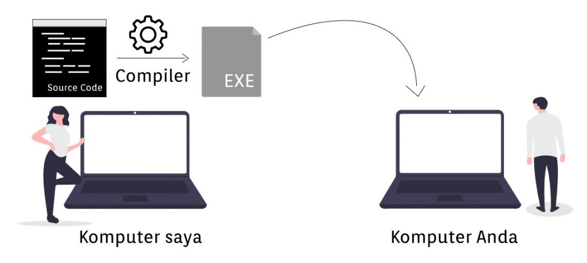
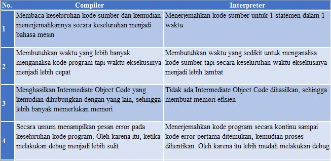
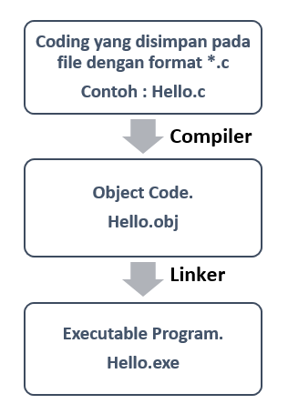

Translator
Pengertian Compiler
Bayangkan Anda membuat sebuah program sederhana di komputer milik Anda sendiri. Kemudian Anda juga ingin menjalankan program tersebut di komputer teman Anda. Metode pertama kita menggunakan compile.
Jika kita membahas tentang metode compile, maka kita akan berteman dengan compiler. Compiler adalah sebuah program yang bertugas untuk mengonversi source code yang kita buat menjadi bahasa mesin. Apabila terdapat penulisan kode yang salah,
maka compiler akan mengirimkan pesan eror kepada kita dan harus diperbaiki. Jika tidak maka akan menghasilkan berkas executable, contohnya seperti .exe.

Arsitektur compiler modern biasanya bukan lagi merupakan program tunggal namun merupakan rangkaian komunikasi antar program dengan tugas spesifik masing-masing. Program-program tersebut beserta tugasnya secara umum terdiri dari:
Pengertian Interpreter
Dalam ilmu komputer, interpreter (penerjemah) adalah perangkat lunak yang berfungsi melakukan eksekusi sejumlah instruksi yang ditulis dalam suatu bahasa pemrograman tanpa terlebih dahulu menyusunnya menjadi program bahasa mesin. Interpreter umumnya menggunakan salah satu strategi berikut untuk menjalankan program:
Pada dasarnya metode interpret sama dengan compile yaitu mengonversi bahasa pemrograman supaya bisa dipahami oleh mesin dengan bantuan interpreter. Perbedaannya adalah ketika kita menggunakan compiler, kode sumber akan dikonversi menjadi machine code (membuat berkas executable) sebelum program tersebut dijalankan. Sedangkan interpreter mengonversi source code menjadi machine code secara langsung ketika program dijalankan. Salah satu bahasa pemrograman yang dapat diinterpretasikan adalah JavaScript. Bayangkan Anda membuat program sederhana menggunakan JavaScript. Kemudian Anda membagi source code tersebut ke teman Anda. Untuk menjalankan JavaScript tersebut, teman Anda setidaknya bisa menggunakan web browser untuk menjalankannya. Web browser sudah terdapat interpreter di dalamnya sehingga berkas JavaScript tersebut bisa diinterpretasikan secara langsung.
Perbedaan Compiler dan Interpreter
Linker adalah suatu program yang menterjemahkan program objek (bereksention OBJ) ke bentuk program eksekusi (berekstension EXE atau COM).Linker digunakan untuk menyatukan modul program dengan modul – modul lain, sehingga menjadi sebuah executable (contoh modul yang di link adalah pthread). Sedangkan Linker merupakan program yang dapat mengubah file Objek menjadi file COM atau EXE.
Program Linker dapat mengkonversi file objek yang berupa relocatable object code yang berupa bahasa mesin yang secara relative masih harus ditepatkan kedudukannya dan disesuaikan dengan aturan DOS. Program pelayanan Linker pada Turbo Assembler adalah TLINK.EXE

Penggunaan linker TLINK.EXE mernghasilkan file dengan nama file berekstensi COM atau EXE yang terdiri dari kode bahasa mesin yang telah pasti penempatannya sehingga dapat disimpan di memori (RAM) untuk melaksanakan program.
Semua proses assembly dan semua proses link harus tidak ada kesalahan artinya error harus 0. Jika masih ada error program harus diedit dengan membuka source program (file .ASM). Untuk menjalankan file yang telah dilinker dengan TLINK.EXE, maka langsung dapat dieksekusi dengan mengetik nama file di depan prompt DOS atau di run melalui Windows.
Copyrights © 2023 - Muhammad faishol akbar , All Rights Reserved.